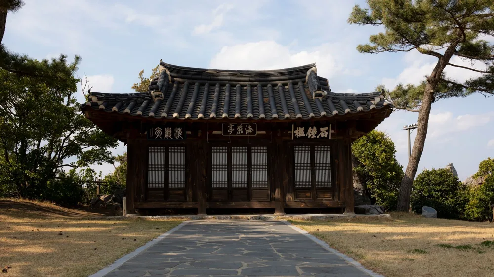

고택 숙박 & 종가음식 코스, 흔히 놓치는 경험부터 예약 팁까지
사진: FranKai Silva / Pexels (무료 이미지, 출처 표기)
고즈넉한 고택에서 맛보는 종가음식, 왜 특별할까요?

고즈넉한 고택에서 하룻밤 묵으며, 그 집안의 내림손맛이 담긴 종가음식을 맛보는 특별한 여행을 꿈꾸시나요? 흔히 접하기 어려운 고택 숙박(한옥 스테이)과 종가음식 연계 코스는 단순한 여행을 넘어 한국의 정체성을 깊이 이해하고 체험하는 기회를 제공합니다.
고택 숙박은 한국의 전통 가옥인 한옥에서 그 공간의 역사와 아름다움을 직접 느끼는 경험입니다. 여기에 종가음식(종갓집에서 대대로 내려오는 음식)이 더해지면, 단순한 한 끼 식사를 넘어 집안의 문화, 역사, 철학이 담긴 귀한 식문화를 오감으로 체험할 수 있습니다. 특히 지역별 특색이 강해 같은 듯 다른 매력을 발견하는 즐거움도 큽니다.
나에게 맞는 고택 숙소 & 종가음식 코스 고르는 법
다양한 고택 숙박과 종가음식 연계 프로그램 중에서 나에게 맞는 곳을 선택하려면 몇 가지 기준을 고려해야 합니다.
- 목적 설정: 휴식, 문화 체험, 미식 탐방 등 여행의 주된 목적을 먼저 정합니다. 조용한 휴식을 원한다면 한적한 시골 종가를, 다양한 체험을 원한다면 관광 인프라가 잘 갖춰진 지역의 프로그램을 고려할 수 있습니다.
- 지역 선정: 안동(유교문화), 전주(한식), 영암·담양(남도의 맛) 등 지역별로 특색 있는 고택과 종가음식을 만날 수 있습니다. 어떤 지역의 문화와 맛에 더 끌리는지 생각해 보세요.
- 규모 및 분위기: 대규모 한옥 리조트형 숙소는 편의시설이 잘 갖춰져 있지만, 소규모 전통 고택은 더욱 깊이 있는 고즈넉함을 선사합니다. 선호하는 분위기를 선택하세요.
- 종가음식 스타일: 특정 재료(예: 콩, 장)를 활용한 종가음식, 제사상 등을 재현한 의례 음식, 혹은 일상식 등 종가음식의 스타일을 확인하고 평소 관심 있던 분야를 선택하는 것도 좋습니다.
- 예산: 2026년 08월 기준으로 1박 2인 기준 10만원대부터 수십만원대까지 프로그램별 가격대가 다양합니다. 예산을 미리 정하고 그에 맞는 코스를 탐색하는 것이 효율적입니다.
주요 고택 숙박 및 종가음식 연계 프로그램 알아보기
고택 숙박과 종가음식을 연계한 프로그램은 한국관광공사나 각 지자체를 통해 다양한 형태로 운영됩니다.
- 한국관광공사 활용: 한국관광공사가 선정한 '코리아 유니크 베뉴(Korea Unique Venue)'나 '한국관광품질인증'을 받은 고택 숙소는 일정 수준 이상의 품질과 서비스가 보장됩니다. 해당 홈페이지에서 정보를 찾아볼 수 있습니다.
- 지자체 연계 프로그램: 경북 안동시, 전남 담양군 등 많은 지자체에서 지역 고택 체험과 종가음식 프로그램을 운영하고 있습니다. 해당 지자체 문화관광 홈페이지를 참고하면 좋습니다.
- 사설 업체 및 플랫폼: 한옥 스테이 전문 예약 플랫폼이나 전통문화 체험을 전문으로 하는 사설 업체를 통해서도 다양한 연계 코스를 찾아볼 수 있습니다.
예를 들어, 안동 구름에 리조트는 고택 숙박과 함께 인근 종가음식 체험 프로그램을 연계하여 안동 지역 종가와의 협력을 통해 방문객에게 깊이 있는 경험을 제공합니다. 전주 한옥마을은 다수의 한옥 숙박 시설과 함께 전주 비빔밥, 한정식 등 향토음식 체험을 쉽게 접할 수 있는 곳으로 유명합니다. 전남 영암 구림 한옥마을 또한 한옥 숙박과 함께 남도 지역의 특색 있는 종가음식을 맛볼 수 있는 기회를 제공합니다.
예약부터 방문까지: 놓치지 말아야 할 체크리스트
성공적인 고택 숙박 및 종가음식 경험을 위해 예약 전과 방문 전 반드시 확인해야 할 사항들을 정리했습니다.
2026년 08월 기준, 인기 있는 고택 숙소 및 종가음식 프로그램은 최소 1~2개월 전 미리 예약하는 것을 권장합니다. 특히 주말이나 성수기(공휴일, 여름휴가 등)에는 경쟁이 치열할 수 있습니다. 예약 전에는 반드시 해당 고택이나 프로그램의 공식 홈페이지를 방문하여 최신 정보와 정확한 사항을 다시 확인하시길 권장합니다.
더욱 풍성한 경험을 위한 팁
고택 숙박과 종가음식 연계 코스를 더욱 깊이 있게 즐기기 위한 몇 가지 팁을 소개합니다.
- 종가 또는 문화재 해설 신청: 숙박하는 고택의 역사나 종가 음식에 대한 해설을 신청하여 듣는다면, 단순한 체험을 넘어 그 안에 담긴 이야기와 의미를 이해하게 되어 경험의 깊이가 달라집니다.
- 전통 놀이 및 체험 참여: 다도, 전통 공예, 한복 체험 등 고택에서 추가로 제공하는 전통 문화 체험 프로그램에 적극적으로 참여해 보세요. 한국의 문화를 더욱 생생하게 느낄 수 있습니다.
- 주변 문화유산 탐방: 숙소 근처의 서원, 향교, 박물관 등을 함께 방문하여 해당 지역의 역사와 문화에 대한 이해를 넓히는 것은 전체적인 여행 경험을 더욱 풍성하게 만듭니다.
- 계절별 매력 탐색: 봄의 꽃, 여름의 푸르름, 가을의 단풍, 겨울의 설경 등 계절에 따라 고택이 선사하는 정취가 다릅니다. 방문하고자 하는 계절의 특징을 미리 파악하고 방문하면 좋습니다.
🔗 이 글도 함께 보면 좋아요: 전국 종가 시그니처 메뉴 완벽 비교: 전통의 맛, 어디가 다를까?
관련 추천 상품
이 포스팅은 쿠팡 파트너스 활동의 일환으로, 이에 따른 일정액의 수수료를 제공받습니다.